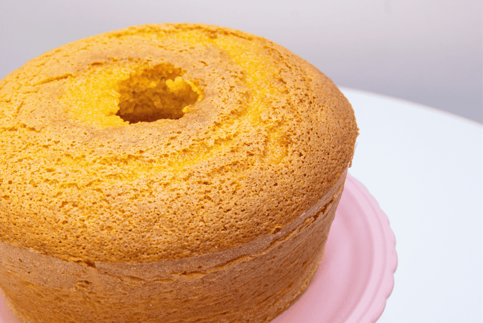

Bolo de Chocolate e Cenoura
| Dificuldade | Porções | Tempo de Preparo |
|---|---|---|
| Fácil | 10 fatias | 60 minutos |

Ingredientes
- 3 ovos
- 1 e 1/2 de chá de açúcar
- 2 xícaras de farinha de trigo
- 1 xícara de chocolate em pó
- 1/2 xícara de óleo vegetal
- 1 colher de sopa de fermento em pó
- 1 pitada de sal
- 1 xícara de água quente
Modo de Preparo
- Bata no liquidificador os ovos, o açúcar, achocolatado
- Coloque a farinha de trigo os poucos
- Despeje a massa em uma tigela e adicione a água quente, o sal e o fermento em pó, misturando delicadamente
- Despeje a massa em uma forma untada e asse em forno médio-alto (200°c) preaquecido pod 40 minutos